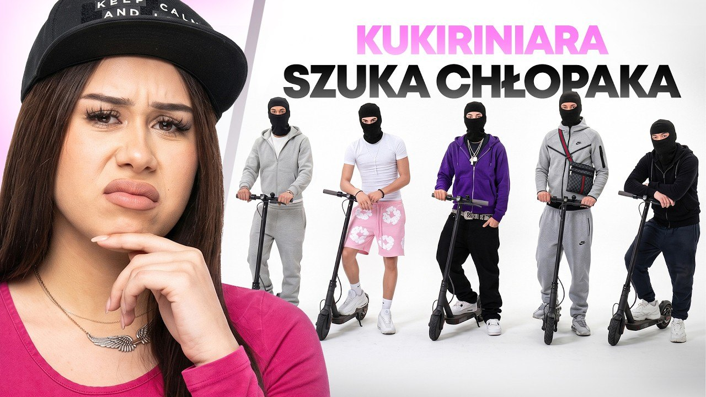

Kanał rośnie szybciej niż kiedykolwiek
Pierwszy tydzień promocji Amorków. Ruszyły reklamy na YouTube, TikToku i Instagramie, wystartowały konta fanowskie i codzienny rytm publikacji na wszystkich platformach. Efekt: prawie dwa razy więcej wyświetleń niż tydzień wcześniej, rekordowy dzień kanału i prawie 2 000 subskrypcji.
Tydzień do tygodnia
Cały kanał @AmorkiYoutube według YouTube Studio: 12–18.10 (przed promocją) i 19–24.10 (tydzień promocji, niedziela jeszcze się liczy).
Wyświetlenia kanału dzień po dniu
W tysiącach. Sobota 24.10 to najlepszy dzień kanału: 47 tys. wyświetleń.
Hit tygodnia: KUKIRINIARA

Odcinek dostał najmocniejsze wsparcie reklamowe i od razu złapał algorytm YouTube. Reklama dała mu start, a za nią poszły wyświetlenia organiczne z propozycji i strony głównej. W samym tygodniu promocji zebrał +71 tys., więcej niż przez pierwsze pięć dni po premierze. Pod filmem 1 678 polubień i 85 komentarzy.
Wyświetlenia narastająco od premiery 14.10.
Subskrypcje: prawie 2 000
Liczba subskrypcji kanału na koniec dnia. W dwa tygodnie kanał podwoił liczbę subskrybentów.
Długie odcinki na YouTube
Wyświetlenia teraz (25.10, 14:00) i przyrost w tygodniu promocji według YouTube Studio.
| Odcinek | Wyświetlenia teraz | Przyrost w tygodniu | Wzrost |
|---|---|---|---|
| KUKIRINIARA vs 5 KUKIRINIARZY hit | 130 344 | +70 850 | +119% |
| To był pierwszy raz Piotrka i to w programie! | 29 325 | +4 656 | +19% |
| Czy wygląd ma znaczenie w miłości? | 14 986 | +2 764 | +23% |
| Dlaczego związki się rozpadają? | 14 621 | +4 285 | +41% |
| Test wierności poszedł nie tak, jak myśleli | 13 129 | +4 265 | +48% |
| Najlepsze metody jak zrobić to na pierwszej randce | 9 476 | +2 806 | +42% |
| Czy można doić na pierwszej randce? | 7 271 | +5 386 | +286% |
| Spicy randki w ciemno na bazie outfitu! nowy 22.10 | 7 725 | +7 575 | premiera |
| Przez to rozpadł się ich związek! nowy 25.10 | 494 | · | premiera |
Każdy starszy odcinek urósł w tygodniu o kilkanaście do kilkuset procent. Widzowie oglądają odcinki średnio 8–11 minut, więc to prawdziwe oglądanie, a nie przypadkowe kliknięcia.
Reklama celowana w widownię Amorków
Wszystkie kampanie maksymalnie 5 dni, każda nazwana tytułem odcinka.
7 odcinków
Osobna kampania na każdy odcinek. Polska, język polski, wiek 18–34, czyli dokładnie widownia Amorków. Formaty In-Feed (odcinek w propozycjach i wyszukiwarce) oraz Shorts.
Spark Ads
Klip z odcinka KUKIRINIARA z przyciskiem do pełnego odcinka. Klip urósł z 55 do 127 tys. wyświetleń.
Rolka KUKIRINIARA
Reklama rolki na grupę docelową programu, 12,5 tys. osób zasięgu i prawie 6 tys. pełnych obejrzeń.
| Budżet reklamowy w tygodniu | Google / YouTube | TikTok | Meta | Razem |
|---|---|---|---|---|
| 19–25.10 | 1 248 zł | 130 zł | 70 zł | 1 448 zł |
Ten tydzień był celowo spokojny budżetowo. Najpierw chcieliśmy przejść wszystkie weryfikacje nowego konta reklamowego Google na mniejszych kwotach, a dopiero potem wejść z mocniejszą reklamą.
Publikacje: 139 nowych treści
Od 22.10 stały rytm: 5 klipów dziennie na każdej platformie kont oficjalnych (12:00, 15:00, 17:30, 19:30, 21:30) i 3 dziennie na kontach fanowskich. Wcześniej wychodził mniej więcej jeden klip dziennie.
| Konto oficjalne | Obserwujący na starcie | Obserwujący teraz | Wzrost |
|---|---|---|---|
| YouTube @AmorkiYoutube | 1 357 | 1 960 | +44% |
| Instagram @amorki_official | 219 | 243 | +11% |
| TikTok @amorki_official | 1 045 | 1 093 | +4,6% |
| Facebook Amorki nowa strona | 0 | 4 | start |
Najlepsze klipy tygodnia
Konta fanowskie: Amorki Momenty
Założyliśmy i prowadzimy fanowskie profile programu na YouTube, TikToku i Instagramie. Codziennie wychodzą tam najlepsze momenty z odcinków, a każdy klip i każdy profil kieruje widzów na pełne odcinki na @AmorkiYoutube.
Amorki Momenty
@amorki.momenty
@amorki.momenty
- Każdy klip kończy się planszą „A co było dalej? Link w profilu @AmorkiYoutube”.
- W opisie każdego profilu fanowskiego jest link do kanału Amorki na YouTube.
- Instagram jest już największym zewnętrznym źródłem ruchu na kanał, przed Google i Facebookiem.
- Prawie 10 tys. wyświetleń kont fanowskich już w pierwszych dniach.
Co zrobiliśmy w tym tygodniu
- Uruchomiliśmy kampanie na YouTube, TikToku i Instagramie, celowane w widownię programu.
- Zakończyliśmy konfigurację fanpage Amorki na Facebooku. Strona jest gotowa, publikujemy 5 klipów dziennie.
- Założyliśmy trzy konta fanowskie Amorki Momenty i ruszyliśmy z codziennymi publikacjami.
- Wprowadziliśmy stały rytm 5 klipów dziennie na każdej platformie kont oficjalnych.
- Przeszliśmy większość weryfikacji nowego konta Google Ads TVN (dane firmy, płatnik, powiązanie z organizacją).
Google Ads: ostatni krok weryfikacji
- 16–19.10dane firmy (Dun & Bradstreet), oświadczenie o reklamach politycznych, dane płatnika i NIP
- 20.10potwierdzenie powiązania z organizacją kodem z firmowego e-maila TVN, reklamy ruszyły
- 22.10Google poprosił o dokumenty firmy. Odpis KRS odrzucony z powodu różnicy w nazwie („TVN SA” w profilu płatności, „TVN SPÓŁKA AKCYJNA” w KRS)
- 23.10poprawiona nazwa w profilu płatności, ponownie odpis KRS i zgłoszenie do supportu Google
- terazwszystko wysłane, czekamy na decyzję Google
Plan: gdy Google przywróci konto, przechodzimy na bardziej agresywny marketing i większe budżety. Kampanie są gotowe, start zajmie minuty.
Plan na kolejny tydzień
Mocniejsza reklama na YouTube
Po weryfikacji od razu włączamy kampanie na wszystkie odcinki i zwiększamy budżety. Celem jest minimum 50 tys. wyświetleń na każdym długim odcinku.
Nowe odcinki wspierane od premiery
Każdy nowy odcinek dostaje reklamę od pierwszego dnia, kiedy YouTube najmocniej go podsuwa. Tak jak KUKIRINIARA.
Więcej Spark Ads na TikToku
Najlepsze klipy tygodnia, np. „Chciał zaimponować w metrach na sekundę” (64 tys.), wrzucamy do reklamy z przyciskiem do pełnego odcinka.
Rytm publikacji zostaje
5 klipów dziennie na kontach oficjalnych i 3 na fanowskich. Potrzebujemy kolejnych materiałów do cięcia: nowe odcinki i rolki od TVN.
Źródła: YouTube Studio, Google Ads API, Meta API, TikTok API, panel TikTok Ads. Stan na 25.10.2026, 14:00.